Tightening feedback loops and deep linking
2023-10-17
Note
Informating is a term coined by Shoshana Zuboff in the book In the Age of the Smart Machine (1988). You can think of it as turning something into useable information.
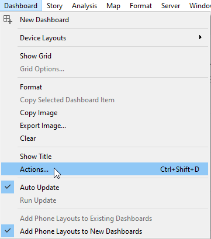
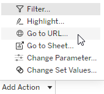
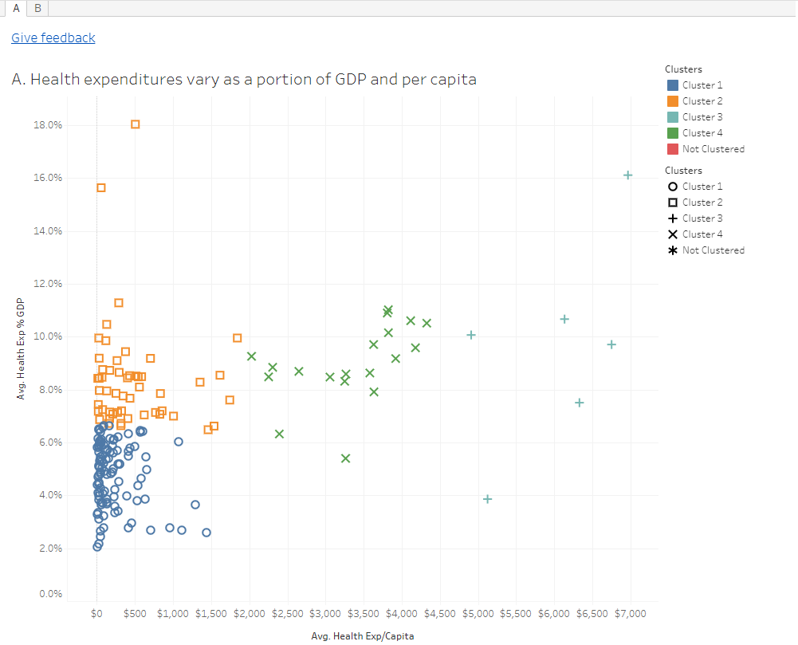
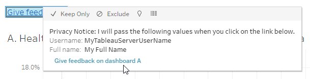
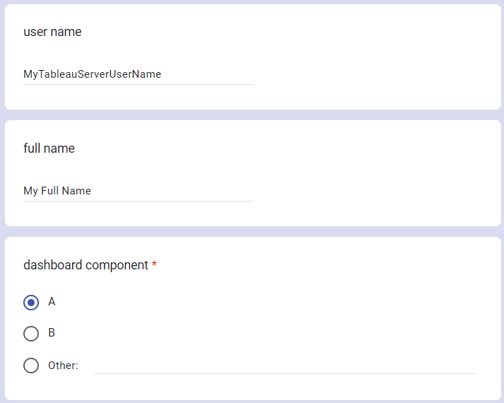
Click on “⁝” > “Get pre-filled link”
When you click “Get link” and then “COPY LINK”, you’ll get something like (where I have added spaces and line breaks for readability):
https://docs.google.com/forms/d/e/1FAIpQLSdm28hTNGWKTXT 5vk1Wmk3c_BuDvsmnShylr6FLGGx0vaQdyw/viewform ?usp=pp_url &entry.1727620612=First+Name &entry.838417280=Last+Name &entry.908520332=other_option &entry.908520332.other_option_response=other+dashboard
| meaning | URL part |
|---|---|
| protocol | https:// |
| server name | docs.google.com |
| path | /forms/d/e/.../viewform |
| start of GET query | ? |
| key=URL-encoded value | usp=pp_url |
| separator | & |
| key=URL-encoded value | entry.908520332=Retention+%26+progression |
| separator | & |
| key=URL-encoded value | entry.1727620612=<Username> |
| separator | & |
| key=URL-encoded value | entry.838417280=<Full name> |
URL broken up into multiple pieces. These should all be on one line.
References: permadi.com introduction to URL encoding
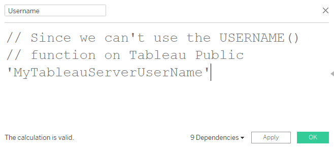
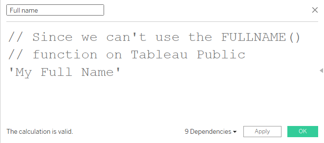
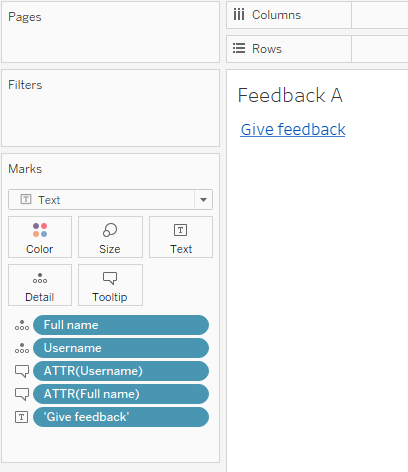 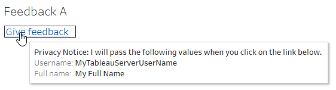
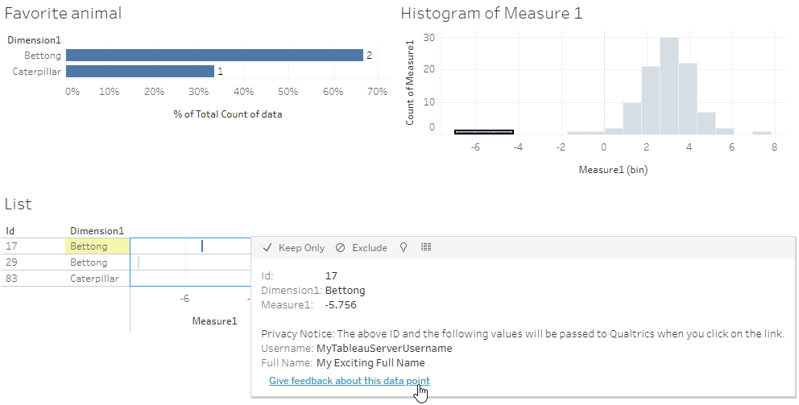
References: Qualtrics. “Passing information via query strings”.
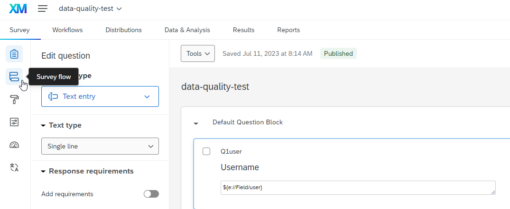Click on the “Survey flow” button.
Set Embedded Data variables from the URL
Use Embedded Data variable in default value with the syntax ${e://Field/fieldname}
After this, the work in Tableau is nearly identical to the Google Forms case.
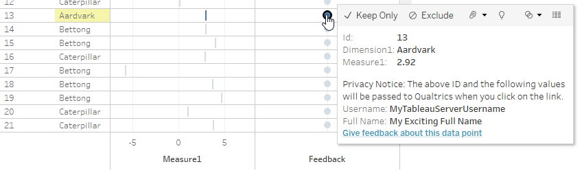Feedback dot approach
🚧🏗👷♀️👷♂️🏗🚧 This section is a work-in-progress.
Click “Edit Report” and then “Edit” to bring up the “Edit Report” dialog so that you can enter the parameters in the “Parameters” box. To define a parameter called StudentID, I used the XML markup <param id="StudentID" />.
dialog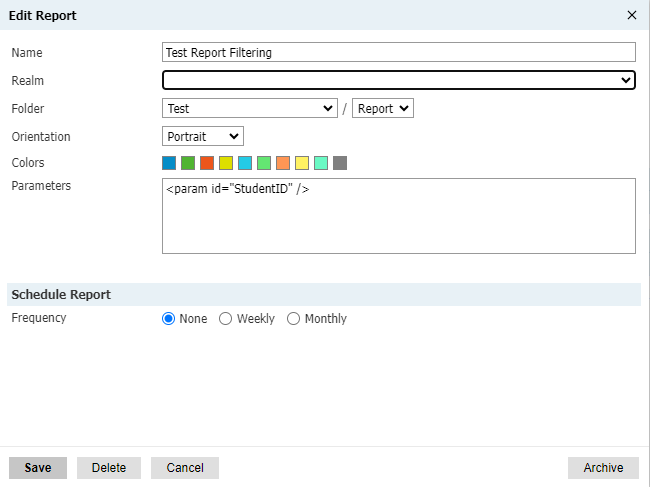
Add a “Data/Charts” or “Data Explorer” part. The “Query” part didn’t work for me.
dialog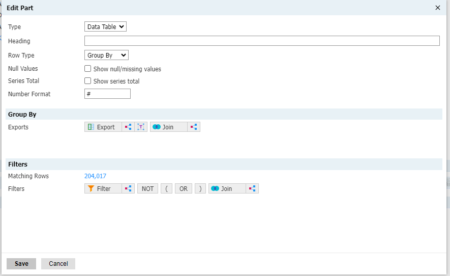
Use the syntax @variablename to in a filter to access the parameter.
dialog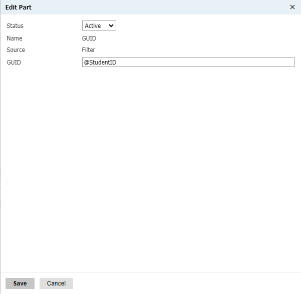 dialog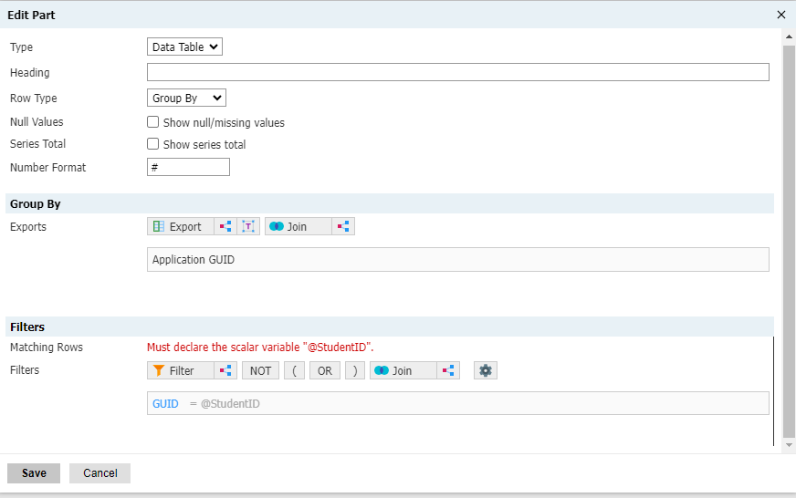
Slate report IDs look like:
/manage/report/render?id=reportUUID¶meter1Id=parameter1Value&…
A UUID/GUID is what Slate uses internally to refer to certain data elements as well as queries and reports.
sometimes
Important
Error: Must declare the scalar variable “@StudentID”.
https:// URLs).github.com/bvancil/tableau-url-actions